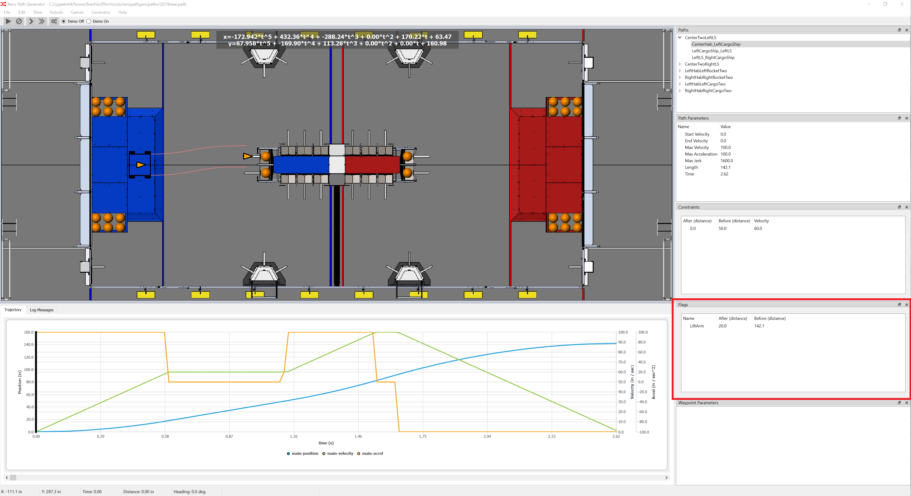

Flags Window

The flags window provides a way to add flags to a path. A flag is signal to the robot
software that that the robot is between a give range of positions along a path. For instance, you
may activate a flag at the halfway point of a path to start lifting an elevator so
that it is at the desired height when the end of the path is reached.
This path generation program just provides a way for flags to be specified as a function of
distance along a path. Then a flags file is generated that maps the flags to times along the
path.
It is up to the robot code to read the flags file and process the flags accordingly.
Error Code Xero has a flags manager and "wait for flags" actions that are used to manage
flags within the robot code.